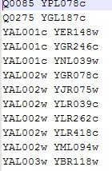
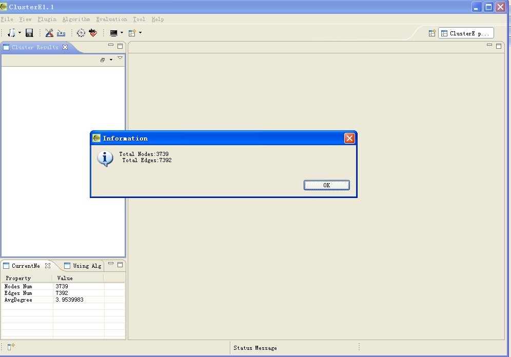
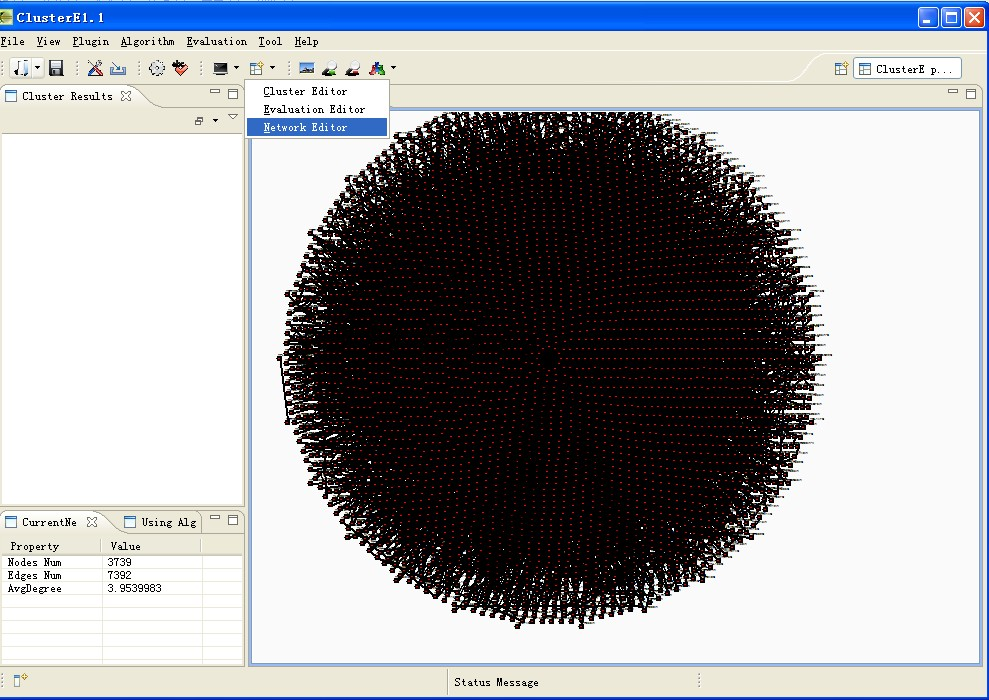
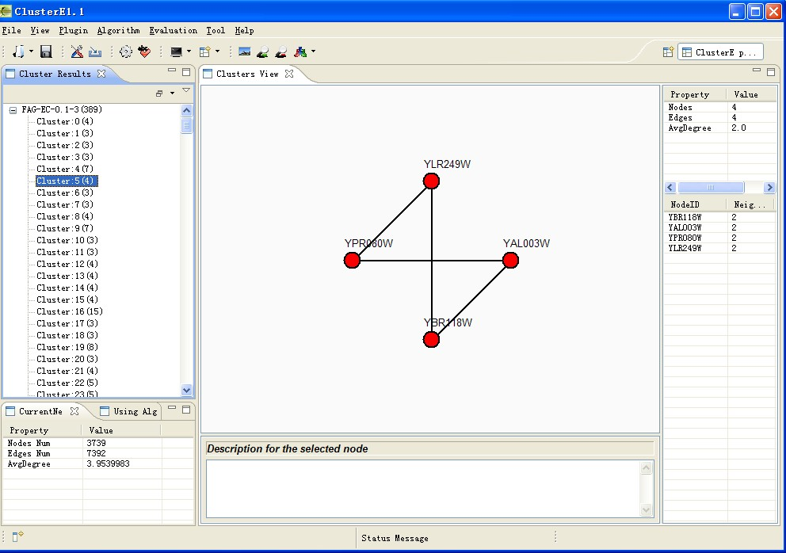
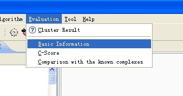
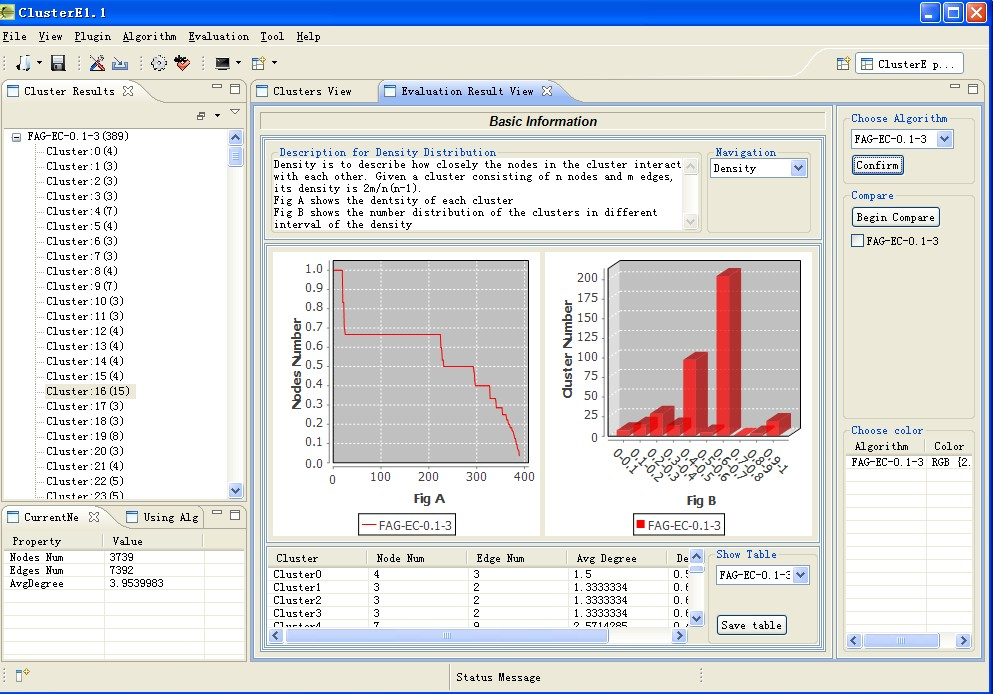

C-DEVA Operation Steps：
1，Reading protein network with a text file：
(1)_Read the original network
File format：
After reading the file

We can check the network graph：

(2)Read the file which the system outputs
File format
2,Identify the functional modules with the clustering algorithms
Choose the algorithm：choose the menu "Algorithm"：

Choose a algorithm and run：if the algorithm needs several paramaters then there will be a setting dialog：

After setting the paramaters then click the button "confirm" to analysis the network,the result is shown as following picture：
We use tree to show the results,when we click any tree node we can check the functional module：

There is another way to display the results,which show the overlap among the complexes,we can check the results with the operations just as the following pictures：

Choose the menu "Show Overla" then we can check the overlap among the complexes：

As there are no overlaps among the complexes which the algorithm FAG-EC identify.so we can see no neighbour of the node as follows。
(3)The implements of the evaluation
After identifying the function modules,then we can evaluate the results with the evaluation plug-ins。

Now there are three evaluation plug-ins in this system：。Here we set the "Basic Information" plug-in as the example。

The red area is a control panel,the blue area is also a control panel that the system offers。
If we choose to evaluate the density of the complexes.
